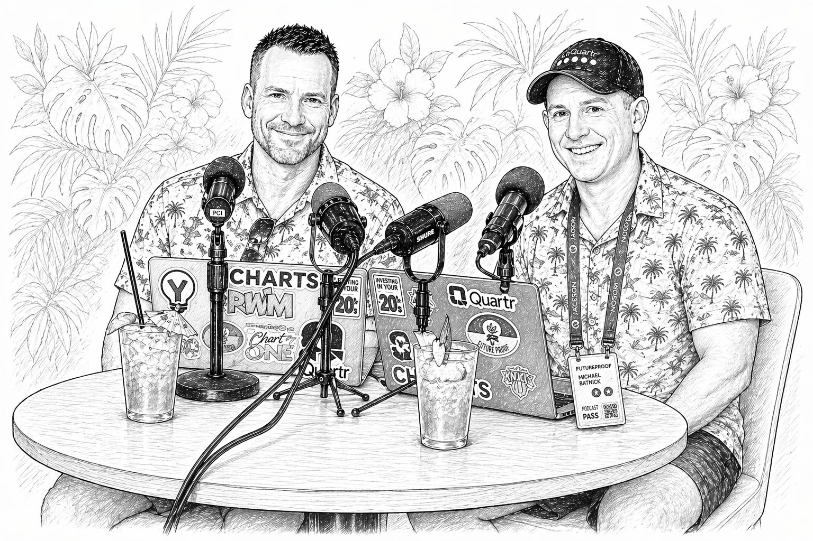

Talk Your Book: Juicing Your Returns
Welcome to Animal Spirits, a show about markets, life, and investing. Join Michael Batnick and Ben Carlson as they talk about what they're reading, writing, and watching. All opinions expressed by Michael and Ben are solely their own opinion and do not reflect the opinion of Ritholtz Wealth Management. This podcast is for informational purposes only and should not be relied upon for any investment decisions.

Clients of Ritholtz Wealth Management may maintain positions in the securities discussed in this podcast.
Welcome to Animal Spirits with Michael and Ben. We continue the conversation with Matt Kaufman from Calamos, but they're all on callable ETFs, which is when your phone is ringing, you don't automatically... This is an exciting conversation. It's not too often that you speak to one of these people in the product space and the wheel starts spinning.
I can see the gears turning in your head throughout this conversation. Listen, the ETF land is exciting. There's all sorts of innovation that is not destructive. There's certainly destructive innovation too, but the conversation that we have with Matt, basically, I think the TLDR is, this is an efficient, non-insane way for you to get more upside, more exposure to the S&P 500.
I was looking for a sense, a sense followed up with that blog, with that blog. It just is. And of course, there are caveats, and there are things to learn, which we get into in the conversation. It's a higher risk, higher reward, higher volatility strategy.
I think it's really interesting, and the point you make at the beginning is that we're taking this structured product stuff, which was difficult for a lot of people to access. We created our own structured product trade. One of the guys I worked with had tinkering in a lab to create this trade. And the trade didn't work out, but it was Hong Kong and China.
But was it fun? That was interesting. But the amount of paperwork necessary to punish structured trade blew my mind. And the fact that you can now take these structured products that people have been using for years and now do them in an ETF wrapper and make it easier to take all the paperwork away, that's pretty interesting stuff.
Obviously not for everyone, but I think a lot of people will listen to this and go, okay, I'm intrigued. I think that's a good selling point for a strategy. It's, okay, I could see this. I'm intrigued.
I'm curious if I could fast forward three years, curious to see what the uptake on these strategies are.
Innovation, it's happening. All right, let's not step on any more of this. Here's our conversation with Matt Kaufman from Calamos.
Matt, welcome back on the show. Ben, thanks for having me. Always good to be here. Got a big picture question for you to start with, and we can narrow things down.
It feels like this decade, the innovation among ETFs is probably about as much as we have seen. There are strategies available to individual investors now that, I don't know, maybe just hedge funds were using them in the past. In some cases, it seems like they're brand new. I'm curious what the process looks like for you as someone who oversees your strategies and develops.
What does the development process look like when you're trying to put together a new strategy that uses these instruments and derivatives and options, unlike things that people are used to in the past? How do you put these things together? Yeah, how much time you got? 30 minutes.
It's a great point. The innovation is real. We are seeing a tremendous amount of innovation, especially in the ETF landscape.
Not just an ETF thing, it's happening all over the world. You've got AI, technology is expanding at an ever-increasing rate, or flying around the moon now. There are some remarkable things happening in the world. The ETF is just over 30 years old, so you're seeing a tremendous amount of scale, adoption, growth there.
The way that we think about how to bring strategies into the market, we try to do things that haven't been done before but might exist in other ecosystems or tangent areas, the word I'm looking for. So for us, we look a lot at other industries, like insurance, we look at structured products. But when you bring those things into the ETF landscape, you've got to think through a lens of liquidity, of tax efficiency, of scale, how big can you get this has to exist in perpetuity. We can't do something that's going to scale out.
And then, how does tax efficiency play into it? People love tax efficiency inside the ETF wrapper, and we have to deliver that. Those are the four lenses that we've looked through. A strategy might work well in one area, but might not be able to be brought into ETFs yet.
We had the derivatives rule a few years ago. We had a new framework for issuing ETFs, and that really has allowed for an exponential growth in options-based strategies and derivatives-based strategies. But the overarching framework in the way that we do things is especially for financial services products, you have to innovate, but you have to innovate with security. I can go out and build the iPhone, I can give you an iOS operating system, and it'll break, and then you gotta fix it, and then you'll get version two and three, and I think we're on version 37.
They don't even ask your permission anymore, just updates automatically. How far can you push the boundaries of, all right, this is a really cool idea, but it's going to take an extraordinary amount of time and effort educating and re-educating people. Absolutely. Yeah, so with ours, to finish the thought there on tech, for us, we try to build things and you have to build with certainty and build things that don't break.
And so that is what we do at Calamos. I've been doing that personally for more than 20 years. Building strategies, innovating with things that actually work. So, how do we think about that in terms of educating the market?
Let's look 20 years ago when everything in the ETF space was passive. So then we introduced something called smart beta and very few people understood what that was. We're going to weight your companies by something other than market cap and heads were exploding. What the heck is this?
How do I think about this? You fast forward and you've got buy-write ETFs that came out in 2007, selling off your upside, you're teaching people about options. A lot of these strategies have existed for a long time, since the late 70s. The ETF wrapper didn't hit the market till 93 in the US, earlier in Canada.
And so we're seeing a lot of that development coming through the ETF landscape, the ETF ecosystem. So what are we doing today? Maybe 10 years ago, we had buffers, that was a brand new term to the financial landscape. And now I say the word buffer and everyone knows what we're talking about.
It's a brand new thing. I saw BlackRock is getting in the game. I'm surprised it took them so long. Yeah, BlackRock just got into the buffer game.
You saw the Goldman deal. So that is now a common household term where you get buffered exposure to the markets. No one had a clue what that was 10 years ago. So what are we doing now?
We're bringing the auto-call space into the market. There's a whole host of products that can be made better and more efficient and liquid inside the ETF wrapper that hundreds of billions of dollars worth of investor dollars are already tied to. And we're giving them efficient, operationally efficient access to. So that's what we did last June with the auto-callable income space.
It's a way to achieve really high stable income with an underlying volatility that looks a lot like the S&P or a lot like the NASDAQ 100 for our CAIQ product. CAIE is the S&P 500 framework. So you can reliably tell your client if you're comfortable with equity market risk, you can turn it in for a high stable coupon, which is about 14% for the S&P version, 17 for the NASDAQ version. You can make it really simple.
Before we get into these products, the ticker is CAGE, which, surprise, was available. Have you guys been squatting on that, or was that? No. Yeah, we came up with the idea for the growth note ETF.
So I guess to jump to the conclusion, growth notes with memory is now in an ETF. That is the thing. So there's two more terms that we have to teach people, which we will do. But C-A-G-E, cage, Calamos Auto Callable Growth ETF is the acronym there.
So it made sense. It was available. We locked it down. All right.
Before we get into these memory ETFs, I don't know what you're talking about, but I'm excited to learn. Yeah. Which of your products, with the benefit of hindsight?
Maybe that's a weird way to put it. Which of your products has been the most difficult for people to fully understand? Fully understand is a good question. I might go out on a limb and say Bitcoin.
So we launched protected Bitcoin in January of 2025. We created a bridge to owning Bitcoin. I think you and I were talking about that in 2025 as well. Ben, I think you actually may have invested in protected Bitcoin.
Ben, are you still holding the paper hands version of Bitcoin?
I did it. I sold half of my Bitcoin position and I was worried, okay, this thing's going to run to 150,000 on me and I need to have some sort of upside with the downside. So I did. Yeah.
What were your different buffers? You had 11%.
Yeah, so we had three different risk levels where you could choose to put 0% at risk and you'd get about twice the risk-free rate, which is a mind-bender to begin with. We had a 10% at risk that gave you about a 20 to 30% upside cap rate and then a 20% floor where you put 20% of your money at risk and you get about a 40 to 50% upside. Okay, so I think I did the first two and I think I held them for a year and it worked because Bitcoin went up for a little bit then it bottomed and came off under it. We discussed this.
Obviously Ben was intrigued, he bought it. Yeah, it worked. I felt like a sucker, what am I missing? Because the way that you just described it, it's, hey, wait a minute.
Zero percent downside. Now, there's, I believe there's a maturity date in there we can discuss, but with that, there's twice the risk for it. It sounds like a free lunch. Yeah.
And we know there's no free lunch. There's no free lunch. So what is the catch? Yeah.
So Bitcoin has to appreciate for you to capture that upside. You're not getting an 8% payment. It is the appreciation. So Bitcoin is down over the last year and so you would have been flat.
That was the tradeoff that you made. You were 100% protected over the outcome period and you had the upside potential of about twice the risk-free rate. So getting people to actually wrap their minds around that and then turn in their Bitcoin or choose to invest in Bitcoin where we're creating this bridge for people to now have protected exposure to Bitcoin. And maybe you're curious about the asset.
It's historically really volatile. It goes through these crypto winters, which you might be in the middle of one right now. And so going through that, it actually showed people it worked. We saw Todd Stone do a piece about it.
It actually worked. We knew it would, but it worked. And so that's the maybe one I would choose because showing people that you can actually deliver on what you say you're going to do, giving you protected exposure to Bitcoin is hard to get your head around. So that's the idea of, as you said, we're taking ideas from different areas and applying them to new vehicles.
So yeah, you took an insurance or option-based strategy and applied it to Bitcoin or structured products around it. That's so cool. Can you do that with other instruments, like 0% downside risk? I'll make a very bold prediction.
The structured product world is in the trillions of dollars globally, and we have unlocked a door to bring all of those strategies into the ETF wrapper. This is sort of like the prediction markets, but maybe the opposite. What I mean is, when you enter the prediction markets, you know exactly at the time that you are making the prediction, the bet, whatever, you know exactly what the odds are. And you could say, I either find this risk of what attractive or don't, right?
Okay, 86 cents that the Seahawks won't win the Super Bowl, that's a free 14% return. Whoops, I found that very attractive. I was wrong, but I found that very attractive. Sure.
Similarly, with products like this, you can say, okay, if this happens, that happens, and if this happens, that happens. No, I don't like this one, but maybe I think this one is interesting. Here's the simple sentence you can use to think about options-based strategies. They deliver certainty to your portfolio.
That's great. That's it. That is literally what they do. What were you doing 15 years ago?
How do you achieve a certain amount of risk in your portfolio? You use stock, bonds, alt, cash, and you try to hit this risk tolerance profile based off of a 20-year historical look of how did those assets perform together? Well, you and I both have lived through two, three, four environments where a lot of those assets are highly correlated on the upside and on the downside. Here, you don't have to do it that way anymore.
There is a better way. You can use option strategies to define your risk profile and you all have clients, investment clients. You can nail it. You can tell them how much risk do you want to take over the next 12 months, 24 months.
We're going to meet in 12 months and I'm going to deliver exactly the risk tolerance Ascendancy and I'm going to deliver the coupon you're looking for. Or I can deliver the growth target you're looking for. There is a whole measure of protection of income and growth that can be delivered with remarkable certainty that really was not possible until, frankly, we launched the AutoCall product about a year ago. So where did that idea come from?
Was that an insurance product? Was it an option space? Where did the auto-callable idea come from? Yeah, auto-callable is a type of derivative income strategy that was squarely in the structured note space.
So if you look at the covered call market, it's about a $200 billion per year market, pick your favorite covered call strategy. You sell off your upside, you collect an income payment for that. If you go to the other side of the house, you go to the structured note side of the house, derivative income dominates there as well, but it's done so through a strategy called the Autocallable Yield Note. And that's where basically a long-dated put writing strategy with some bells and whistles on it.
You can't use the listed markets to develop it. You've got to work with a bank. And so that's why we worked with JP Morgan. We took their Autocallable pricing model on a valid vantage index and built a ladder portfolio out.
We launched the world's first Autocallable income ETF last June. There's about a billion dollars between that one and the Q's version that we have in the market. The other half of that auto-call pie, we've talked about this before, not everybody wants income. Some people want growth.
And so we've now launched the auto-callable growth ETF CAGE. And you look at the index that we are trading on swap. It has the same vol advantage framework that we've done on the income side, but it is purely a growth strategy. And if you look over the whole time horizon since 2005, it's delivered about two and a half times the S&P since inception.
Great question. The way that we do it, think of it like a bunch of bonds. Is Jim Simons managing the ETF? No.
Exactly. The way to think about it is like a bunch of bonds that will pay you a really high coupon if the market is positive at the end of one year. So it's a ladder portfolio of these every year, every week, there's one in the portfolio. So let's just play this out.
After one year, if the market's positive, it pays you about a 29% coupon.
And that is the price you can get, the premium you can collect for a five-year put option with a 35-volt target. That is what you can collect if you build that type of strategy. How consistent is that component of it? It's very consistent because the reference index we're using has consistent volatility.
And so it's a pretty consistent coupon. All right, so just talk that part over one more time. Yeah, so if the market is positive after a year, the reference index that we're tied to, if it's positive after one year, you are going to earn a 29% coupon. So, what if it's not?
What if the market is negative? What if it's down 1%, you do not get that 29%, but here's where the memory feature comes in. This is a brand new term for the ETF world. If you're an advisor who uses structured notes, you hear growth notes with memory now in an ETF.
You're like, holy crap, it's here now, I'm excited. If you don't know, what a memory feature is, is if the market is not positive after one year, you don't lose that 29% coupon. You simply bank it for the next year. So then we go to year two.
Come on. I'm serious. I'm all in. So all you're out is then the premium you pay for the option.
You're not actually out because at year two, if the market's positive, you're going to get both of those coupons. You're going to get 29 times two. What if there's three down years? 29 times three the next year. All right, what if you go to our tool, go to the dashboard on our website.
You can see exactly where all of these are trading. And you'll see that we have some that are one times coupon multiplier, some are two times multipliers. There's one that was hit by the 22 drawdown, hit by liberation day. And so that one's got about four or five percent to go on the upside over the next six months.
If that happens, that one note's going to pay about 108%. I'm guessing, and that's for existing holders, you can't just buy that and bank that, right? If that exists on the day that you buy, you can see it, then it will be banked to you. So we've only captured about 36 of that 100% right now.
So the... Hang on. You're telling me that if the market is up 4%, I can get 60% return? On one of the 52 notes.
It's only going to be a couple percent. Oh, okay. Yeah, there's your catch. Okay.
Yeah. But I do love getting you that way. I've got a number of follow-up questions. So why do you buy?
Why do you buy one every single week? You're just diversifying against the market being down and going. Yeah, think about owning that one note. If the market doesn't move, you have not made a penny in five years.
And so you ladder it out every week. There's 52 of these. And so it gives you an opportunity to capture significant upside. And if the market doesn't give it to you for that year, you bank the coupon.
So you're either earning it or you're storing it. And so you can see years where you might not make much in that year, like a rubber band drawing down. But then if the market recovers in year two, it's going to snap all the way back and you're going to capture remarkable upside. So on average, you would have captured about 22, 23% per year over the last 10 years.
What happens on a day-to-day basis? Does this track the S&P even directionally? It's more volatile than the S&P, tracks directionally. But you are getting paid for that volatility.
You're taking on vol that's a little bit higher than the S&P. And then each of those notes, it's not like you're going from zero to 29. It's not a binary event, like you're getting zero percent one day then 29. Those note values are appreciating up to that coupon and then back down over time.
So you're getting that growth capture all along the way. What's the tax treatment of those things? I know we're not counting it here. Yeah.
So because we are not distributing any coupons to you, a majority, I can't say 100%, but near 100% of this growth is all long-term cap gains when you sell. We are not distributing anything to you. So it's just compounding your growth. If I want to trade this thing, I know that's not the idea here.
Yeah, go ahead. But if I buy it and I hold it for 45 days, then you're paying short-term gains. Your holding period. So if you buy it and sell it before or less than a year, then you're paying short-term gains.
Even on the distributions. There are no distributions. Okay. Money is just growing and compounding.
That 29% is not paid to you. Matt, I am looking for the freest lunch possible. I want you to pay me to eat this lunch. Yeah, for sure.
Yeah. So this is just going right into the fund and it's compounding that growth. So the tradeoff is this. It's a more volatile, it's a rockier road.
That's correct. And so maybe think of it like a levered ETF. And you could tell me how much leverage you feel, even if it's not actually leverage, if it's one, five or two or whatever, that's the price. You got to eat that.
Okay. I love that you brought up leverage ETFs. I'll tell you why it's not that. And then I want to talk about why I think it's better.
So the piece we didn't talk about is each of these notes has a minus 50% maturity barrier. So what that means is if at the end of the fifth year, let's say the market is never positive and you never collect that coupon at the end of the fifth year, as long as the reference index is not down by minus 50%, you're going to get par back on that note. And the reference index is the MercubeValadVantage index. It's the same one we use for CAI and CAIQ.
Okay. And that index has never gone down by that much. It has never breached that principal barrier. What is then explained next to me?
So that index is a high volatility version of the S&P 500. So let's go back to our maybe covered call analogy. You sell off your upside, the income you collect is largely dependent on market volatility, right? Well, if you stabilize that market volatility, I could stabilize the coupon that you're going to get.
And so we're stabilizing the S&P 500 vol at 35%. So what that means is if the market is extremely volatile, let's say COVID when market vol was at 70, you're only about half as exposed to the S&P. And then the inverse is true. If the market vol is about 10, you're going to be more exposed to the S&P in those environments, but the reason you do it is so you get a high premium collected and it's very consistent.
So that is the index that we are tied to. So it was not around during the GFC? It was around during the GFC. And still no 50?
Yeah, no 50% breach. Correct. How close did it get? It drew down beyond the GFC, beyond the 50% barrier, but it did not mature that way.
So you would have had zero principal impairment going back to the GFC. Who is this for? That's a great question. But that's your Ben, obviously.
This seems way more like a Michael than a Ben. Yeah, yeah. Now this is somebody who wants to accumulate wealth over the long term and seek to outperform the S&P 500. You hear people talk about the retirement income crisis in America.
There's millions of people retiring and they have to generate income. So we built income versions to help provide income for those people. One of the best ways to solve the income crisis in America is to solve the savings crisis in America. So if you look at where younger people are investing their money, they actually should be taking on a little bit more than S&P 500 risk.
And so this allows them to do it. If you've got a long time horizon, five years or more, you can put that in a product like this that will actually generate outsized returns over time. That is the goal. You think of the rule of 72, that's a common advisor term where if you're in the S&P 500 historically, you could have doubled your money every seven years.
If you look at this strategy, it comes down to about doubling your money every five years. Or if you're over the last 10 years, it's doubling every three, but I wouldn't count on that. So now you can take that rule of seven and turn it into a rule of five. Why not the rule of four?
Well, because you probably would have breached your barriers. Matt, so who's on the other side of this? So this is a trade that we have with JP Morgan. It's a ladder portfolio of auto-callable options, all growth focused.
It's growth notes with memory. JP Morgan is trading this index on swap. So if you were to build this out in the listed options marketplace, you actually probably could get even higher coupons. JP Morgan gets paid for this trade.
We are trading this on swap with them. We give them SOFR plus 10 basis points. And then that is how the overall strategy is delivered into the market. So if you went to the listed markets and built a five-year long-dated put with a 50% barrier, you'd get a pretty high coupon for that sale right now.
So I understand. So they're like the manufacturer of this product. But for this to win, does somebody have to lose or is it just not going to have to lose? JP just has to hedge out their exposure to the index.
There is no one taking the other side. I will follow the hedge. Exactly. Exactly.
No, but seriously, isn't that the obvious question? Wait a minute. You're telling me that all I have to do, and I know it's way easier said than done, okay. I have to stomach more volatility than the average investor.
Correct. And if I do that, I will get paid for it because you really can't say that with any other instrument. Maybe there's others that I don't know about, but you could take on a lot of risk as an investor and not get compensated for it just because you're trading stocks with the high beta, that's when you get paid for it. Well, why?
Yeah, this has a 1.4 beta. I guess the question is why couldn't you just invest in a 2x levered product? Well, it's giving you daily, weekly leverage and that vol decay is very detrimental over time. This gives you a way to earn, historically, two and a half times the S&P 500 without that vol decay.
And so how is that even possible? Well, think about that 50% barrier. What that means is that you're going to mature at par as long as the reference index isn't down by minus 50%. So what's the story you always tell clients?
You say, if the market goes down 50%, how much does the market have to recover to get even? You guys know the answer is 100%. That's a very simple story. Well, in this product with the notes, if a note is down 50% or 49%, how much does the market need to recover for you to get par back at the end of five years?
Zero. That is your pull to par effect. So as long as that breach is not happening, you're pulling back to par. And so that's where a lot of this benefit is happening.
You've got this pull to par effect in your auto-callable notes. You've got this memory feature of your coupons stacking on each other year over year. And then when the market is running really positive, you collect them all and it's banked. And then you use that money to buy new notes and it just compounds year over year.
It's a remarkably efficient way to achieve outsized growth over time. So what causes this to go wrong? What's the scenario where this strategy does not blow up, but just underperforms? So if you hit a GFC-type event, you might have a 60, 70% drawdown, like it's going to be ugly from that perspective, but you know that you've got this pull to par effect happening in all of your underlying notes.
And so as long as they do not mature below that minus 50% mark, you're going to get par back. And then a majority of these notes, if you look historically, it's almost 90% of them pay out that coupon on one of those years along the way. Well, how about this, Ben? We used to get emails regularly.
Don't seem anymore, reflection of the market environment, from younger people asking us, hey, I'm young. Why don't I just own the levered ETFs, the levered NASDAQ and just hold it for 20 years? And we try and warn them that there's probably better ways to get more exposure to the market, more efficient ways. We try and warn them that, listen, you think that you're ready for a 60% decline in 26 trading days?
You're not ready for that, like what happened during COVID or whatever. This seems like a more sensible, not investment advice, but this seems like a more sensible way if a young person did want to test their gut. I stopped talking mid-sentence.
That was gross. That was supposed to be a question. Question mark. So you're saying, comparing contrast to levered ETFs, if you want to shoot for the moon a little bit or have that higher octane, obviously this is your high octane strategy.
Is this a better vehicle to do it in? Yeah, this is our highest octane, our highest growth product that we have at Calamos ETFs. Again, if you look at the index we're trading on swap, about 26% vol over the last 10 years. And it's going to move on you, but you know, you can rest in the fact that you got that pull to par effect happening in those notes.
You can see it visually. And the real conclusion is if you have time on your side, five years or longer, you can compound your growth at a remarkable rate. And think about, people give you those stats of doubling your money every seven years. Well, if you've got a 30, 40-year time horizon to retirement, you double your money maybe four, five, six times.
What if you could double it eight, nine, 10 times? Well, now, that's a remarkable growth engine. It's, me personally, we have a bunch of kids at home and they're each gonna get a few thousand dollars into CAGE. They're not gonna know it.
And then, once they get older, they'll see it and have a remarkable amount of money, I have to say, potentially, in their account that they can use to fund their retirement. Does that sound like six-minute abs, does it? Do you guys have a factsheet available on the website yet? We do, yes.
We do. We'll have a website. You can go there, see the dashboard. I'm curious to see what it looks like, because there is, I mean, this sounds relatively straightforward.
I know it's not. So back to your original question, the things that we build, the things that are all strategies are complex. There are a lot of things in the market that are complex. The S&P 500 is complex.
You can go as deep as you want. But the headline, we try to build things that have a headline that can be understandable and that will work. And so here you're getting a little more vol than the S&P and you're going to compound potentially at a greater rate than the S&P 500 over time. Was this an idea that came to you or was this something that you guys are well aware of that exists in the marketplace, but for whatever reason, you can't launch everything.
How does this come about? Growth notes are a wildly popular structured product category. The auto-callable space is about $100 billion per year in the United States. It's multiples of that globally.
In a normal market, it's probably split 50-50, but right now people are wanting income. And then as the market starts to take off again, people will want growth. But they want memory. They want growth notes with memory.
And so that's what we built. That's what we're delivering. There's thousands of advisors that are using growth notes. And a lot of them are asking us for this.
They saw the income version. They said, when are you going to do growth notes? And make sure that it has memory. And so that's what we're delivering to them.
Perfect. So where do we send people to learn more? Go to calamos.com. Click on the CAGE link and have fun.
Thanks, Matt. Thank you.